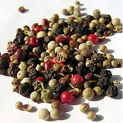

Pfeffer
Der Pfefferstrauch (Piper nigrum), auch Schwarzer Pfeffer oder kurz Pfeffer genannt, ist eine Pflanzenart
aus der Familie der Pfeffergewächse (Piperaceae). Die Früchte werden wegen des darin enthaltenen Alkaloids
Piperin als scharf schmeckendes Gewürz verwendet. Zur Unterscheidung von ähnlichen Gewürzen spricht man auch vom echten Pfeffer.
Die Früchte des Schwarzen Pfeffers (botanischer Name) sind nicht immer schwarz. Je nach Erntezeitpunkt und
weiterer Behandlung haben die Pfefferkörner verschiedene Färbungen: grüner Pfeffer, schwarzer Pfeffer, weißer Pfeffer, roter Pfeffer.
Ausschlaggebend für die Schärfe des Pfeffers sind das Alkaloid Piperin (5-8 %) und Derivate des Piperins wie
Piperettin, Piperylin, Piperanin, Chavicin (eine isomere Verbindung des Piperins) und andere je nach Pfefferart
in wechselnder Zusammensetzung, die man auch als Alkamide (Säureamid-Alkaloide) bezeichnet. Piperin erhält man
in Form von gelben Kristallen über Kristallisation aus einem alkoholischen Pfefferextrakt. Es wurde erstmals 1819 von Ørsted isoliert.
In weißem Pfeffer ist etwa 2,5 Prozent ätherisches Öl, sogenanntes Pfefferöl, und in grünem und schwarzem
Pfeffer bis zu 4,8 Prozent davon enthalten, welches dem Pfeffer sein Aroma gibt. Das Pfefferöl erhält man
über Wasserdampfdestillation von Pfeffer. Im ätherischen Öl sind die Hauptbestandteile Monoterpene, wie
Pinene, 3-Caren, Terpinene, Terpinolen und Limonen, sowie Sesquiterpene, wie α- und β-Caryophyllen und
β-Farnesen. Außerdem findet man im Pfefferöl auch oxidierte Terpene, wie Terpinen-4-ol.

Pfeffer gibt es in folgenden Arten:
- Schwarzer Pfeffer
- Roter Pfeffer
- Grüner Pfeffer
- Weisser Pfeffer
Es gäbe auch noch diverse Gewürzmischungen, welche auf Pfeffer basieren.
Geschichte des Pfeffers
Historisch gesehen hat Pfeffer, obwohl er im Vergleich zum Salz, für die Ernährung des Menschen nicht nötig
ist, eine überragende wirtschaftsprägende Rolle gespielt.Die Heimat der Pfefferpflanze ist Indien, vor allem
die südwestindische Malabar-Küste, wo der Pfeffer-Anbau die längste Tradition hat. Lange vor der Zeitenwende,
wohl 2000 vor Christus, war Pfeffer in Indien bekannt, wurde kultiviert und als Gewürz gebraucht. Im vierten
Jahrhundert vor Christus lernten die Krieger Alexander des Großen auf ihren Feldzügen den Pfeffer kennen und
brauchten ihn mit nach Europa, wo er sehr schnell bekannt und ausgesprochen begehrt war.
Über Jahrhunderte hinweg etablierte sich ein reger Pfefferhandel, der zu der wichtigsten ständigen Verbindung
zwischen Europa und Asien avancierte. Der Handel mit dem Gewürz lag jedoch in orientalischer Hand. Die zentralen
Umschlagplätze für den sehr profitablen Gewürzhandel waren die südarabischen Küstenstriche und Alexandria in
Ägypten, darauf folgten zunächst Rom, später Venedig und Genua. Im Mittelalter gelangten auch Augsburg und
Nürnberg zu ihrer Bedeutung und ihrem Reichtum durch den Pfefferhandel. Warum war das exotische Gewürz so
begehrt? Sicher, der Pfeffer ist ein Erlebnis für die Geschmacksnerven, aber den eigentliche Grund für die
hohe Wertschätzung nennt wohl Gargantua:
Pfeffer hat sowohl konservierende, als auch keimtötende Eigenschaften, in Zeiten ohne Kühlschrank ein
bedeutender Vorzug. So wurde der Pfeffer schon in römischen Zeiten das meistgenutzte Gewürz. Er wird im
bekanntesten römischen Kochbuch, dem Apicius-Kochbuch, für fast alle salzigen Speisen erwähnt. Im alten
Rom standen riesige Pfefferspeicher, jedoch war das Gewürz der langen Transportwege wegen so kostbar,
dass die Pfefferkörner einzeln gehandelt wurden.Nach dem Zerfall des Römischen Reiches übernahmen die
Venezianer und Genuesen den Handel mit dem Pfeffer. Der Gewürzhandel bescherte diesen Städten, zusammen
mit dem Salzhandel, unermesslichen Reichtum.Im Mittelalter blieb Pfeffer das wichtigste Gewürz, aber
nur die Allerreichsten konnten ihn sich leisten, dann jedoch in großen Mengen. Bei der Hochzeit des
Herzogs Karl des Kühnen von Burgund kamen 380 Pfund der Kostbarkeit auf die Tafeln. Die Augsburger
und Nürnberger Kaufleute, die den Pfeffer auf Maultieren über die Alpen brachten, verkauften ihn
mit 600-prozentigem Aufschlag. Aus dieser Zeit stammt die Bezeichnung "Pfeffersäcke" als Ausdruck
für Kaufleute, deren Reichtum auf Wucher beruht.